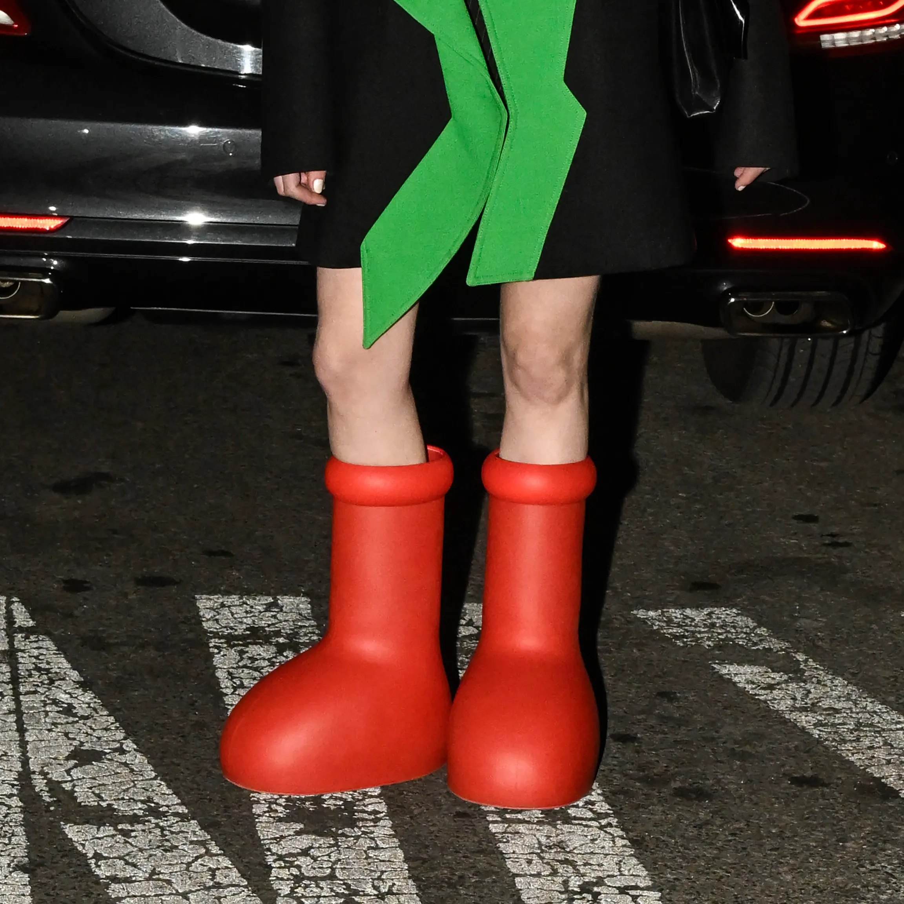

Intro
Sneaker culture, or sneaker collecting, refers to individuals
who covet and collect sneakers. They may follow specific brands
or celebrity or athlete-endorsed footwear. Manufacturers often
design and release limited-edition collections, which makes the
sneakers more difficult to obtain and increases their demand.
Individuals obsessed with or in the business of collecting
sneakers are often called sneakerheads. They may use websites,
platforms, and applications (apps), such as eBay, Facebook, and
Poshmark, to buy and sell sneakers. Many frequently visit
sneaker boutiques and are aware of special or limited release
items. While the sneaker culture is predominantly male, some
women also buy, sell, and trade desirable sneakers.

Background
Rubber-soled footwear was first made possible when Charles
Goodyear (1800–1860) invented vulcanized rubber in 1839.
Previously, rubber would melt under high heat, such as direct
and prolonged exposure to sunlight. Goodyear, a chemist, spent
about five years developing ways to stabilize rubber before he
devised a method involving lead, sulfur, and heat.
Wealthy individuals of the nineteenth century enjoyed lawn games
such as croquet. These games were hard on both the lawn and the
shoes, though. Ordinary leather shoes were stained by grass and
the hard soles gouged the lawn. The first rubber-soled shoes
debuted during the 1860s for croquet players. Soon the upper
classes moved on to tennis, and tennis shoes took on importance
as both performance footwear and a fashion statement. Wearing
tennis shoes announced to the world that one was an athlete.
Leisure time became more common among the middle class with
industrialization. The development of machines reduced the need
for human labor, and sport was one activity people pursued.
After 1891, students and members of the Young Men’s Christian
Association became obsessed with a new sport—basketball.
The Converse Rubber Shoe Company, which was founded in 1908,
expanded its line from rubber boots to athletic footwear for
tennis, netball, and football players. Converse did not enter
the basketball market until 1917, when it introduced the
Converse All Star. High school basketball player Charles “Chuck”
Taylor (1901–1969) was a big fan of the All Star. He persuaded
Converse to hire him in 1921 to sell and promote the sneaker.
Taylor also helped tweak the design to make it perform better
on the court. Taylor traveled across the United States to host
basketball coaching clinics and promote the All Star, which he
carried by the dozens in his trunk. In 1932, Converse recognized
Taylor’s intrinsic value to the basketball shoe by renaming it
he Chuck Taylor All Star. The All Star was the best-selling
sneaker through the 1960s. However, with the death of Taylor in
1969, the All Star’s biggest ambassador was gone. During the
late 1970s, running became a popular fitness craze and Nike,
Adidas, and Puma entered the sneaker market with performance
trainers. The All Star was no longer a major player on the
basketball court, but the introduction of new colors and its
popularity among celebrities helped keep it in the spotlight
through the 1980s and 1990s. Grunge singer Kurt Cobain
(1967–1994), for example, rocked All Stars on stage. In 2008,
Converse recognized Cobain’s contribution with an All Star
collection.
During the 1980s, Nike took a leap into basketball footwear.
The company needed an up-and-coming star. Designer Peter Moore
created a sneaker named for Chicago Bulls player Michael Jordan.
The first Nike Air Jordan debuted in 1985, and Jordan soon
became a name recognized within and without the sports
community. The sneakers were so coveted that reports of teens
and children being robbed of their Air Jordans began appearing
in the news. Nike created multiple versions of Jordan sneakers
for decades, though the iconic original, Jordan 1, is a
collector’s item.
Other sneakers drew attention with the rise of hip hop. In 1986
Run-DMC recorded “My Adidas,” and the brand offered the group a
sponsorship deal.
Celebrities collaborated on sneaker designs and manufacturers
produced limited-edition designs. Customers began collecting
their favorite brands and styles. Manufacturers cultivated
desire through shortages. For example, Nike’s Dunk campaign
produced the Dunk High Supremes Be True to Your School sneakers,
producing just one thousand pairs of each colorway.
As sneakers became more popular for both men and women in the
twenty-first century, celebrity collaborations became more
popular. Rapper and music artist Kanye West has collaborated on
over thirty sneaker designs with companies such as Nike, Adidas,
and Louis Vuitton. Female artists such as Cardi B., Beyonce,
and Dua Lupa have also collaborated to make limited-release
items. Beyond these collaborations, many retail and apparel
companies began marketing sneakers to women, particularly
during and after the COVID-19 pandemic as remote work
opportunities rose and business dress codes became more relaxed.
